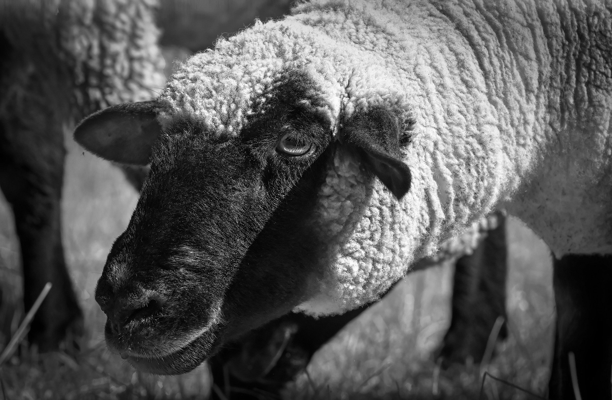

하나, 두울 양을 세네
오늘 은 얼 마나 걸릴까
하루 이틀 사흘 나흘
그런 사람 이필요해요
눈을뜨면 낯선 사람이/ 내옆에서 코를 골곤해
기억나지 않아 어젯밤 /양을 세며 잠에빠진것 빼고
이런 가벼운 관계 참 지겨워 / 하지만 또 다른 사람과 밤을
언제쯤 난 무거워질수있을까 / 그런 사람은 또 어디에있을까
하나 두울 양을 세네
오늘 은 얼 마나 걸릴까
하루 이틀 사흘 나흘
그런 사람 이필요해요
내게와요 내게와
내 손을 잡고 저 아래
깊은곳으로 가요
날 끌어당겨 주세요
기다리고 있어요
당신같은 사람을
기다리고 있어요
양을 세며 말이에요
잠에 빠질것 같아
너의 꿈을 꿀꺼야
